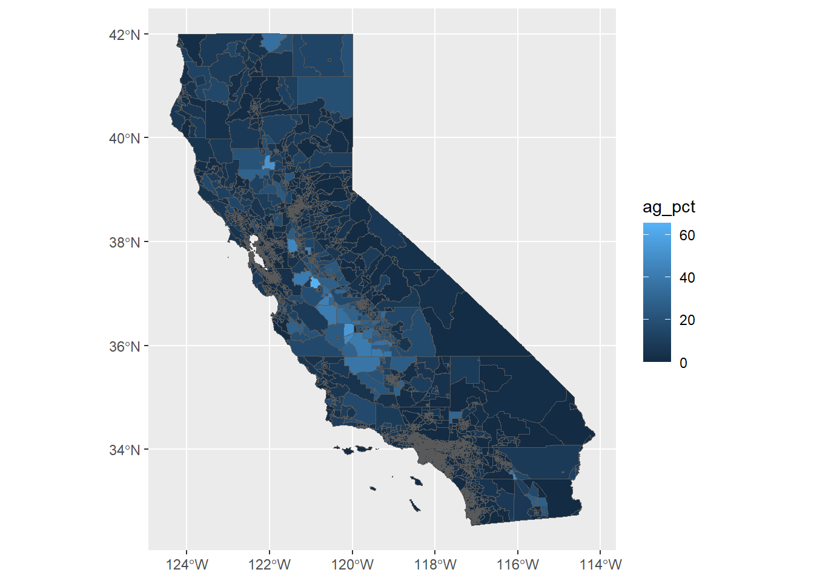

library(dplyr)
library(sf)
library(readxl)
library(ggplot2)
library(fs)Heat Safety Alerts
Summary
This notebook works through creating heat safetey alerts for a specific location.
Setup
Define the data directory (relative to this notebook):
data_dir <- "data"
dir_exists(data_dir)data
TRUE Define a Location
Select a point:
pt_coords <- c(-121.049, 37.621)Get the weather forecast for tomorrow
library(openmeteo)
pt_forecast_tbl <- weather_forecast(location = pt_coords[c(2,1)],
hourly = c("temperature_2m", "dew_point_2m",
"wind_speed_10m", "shortwave_radiation"),
response_units = list(
temperature_unit = "celsius",
windspeed_unit = "ms"),
start = Sys.Date() + 1,
end = Sys.Date() + 1) |>
rename(tas_c = hourly_temperature_2m,
dewp_c = hourly_dew_point_2m,
wind_ms = hourly_wind_speed_10m,
radiation = hourly_shortwave_radiation) Inspect:
pt_forecast_tblCompute the wet bulb globe temperature:
library(HeatStress)HeatStress version 1.0.8.1 (2025-08-13) is loadedUse 'indexShow()' for an overview of the available heat indicespt_wbgt_lst <- with(pt_forecast_tbl,
wbgt.Liljegren(
tas = tas_c,
dewp = dewp_c,
wind = wind_ms,
radiation = radiation,
dates = datetime,
lon = pt_coords[1],
lat = pt_coords[2],
hour = TRUE))
pt_wbgt_lst$data [1] 8.697336 8.818054 7.518307 6.955472 6.334185 5.676562 5.352382
[8] 5.236628 7.472532 13.899945 16.499958 18.899947 21.099937 22.699934
[15] 23.999959 24.099957 22.896356 19.011296 12.739156 11.532463 10.208314
[22] 9.668283 9.196560 7.920959Save the max:
pt_wbgt_max <- max(pt_wbgt_lst$data)Extract the Percent of the Workforce in Agriculture
Load a geojson file containing the percent of the workforce in agriculture (from the ACS):
library(sf)
ca_agemp_sf <- st_read(path_abs(path(data_dir, "ca_ag_emp.geojson")))Reading layer `ca_ag_emp' from data source
`D:\Workshops\R-Shiny\shiny-dsts\shiny-dsts-s26\ex_part2\data\ca_ag_emp.geojson'
using driver `GeoJSON'
Simple feature collection with 9129 features and 5 fields (with 20 geometries empty)
Geometry type: MULTIPOLYGON
Dimension: XY
Bounding box: xmin: -124.4096 ymin: 32.53444 xmax: -114.1312 ymax: 42.00948
Geodetic CRS: WGS 84Inspect
head(ca_agemp_sf)ggplot() +
geom_sf(data = ca_agemp_sf, mapping = aes(fill = ag_pct)) 
Find the census tract for our selected point:
Convert the point into a sf object:
pt_sf <- st_as_sf(data.frame(id=1, lon=pt_coords[1], lat=pt_coords[2]),
coords = c("lon", "lat"),
crs = 4326)Get the tract with a spatial join:
pt_agemp_sf <- st_join(pt_sf, ca_agemp_sf, join = st_intersects)
pt_agemp_sfSave the tract id and the percent of the laborforce in ag:
(tract_id_chr <- pt_agemp_sf$GEOID)[1] "06099001500"pt_agemp <- ca_agemp_sf |>
st_drop_geometry() |>
filter(GEOID == tract_id_chr) |>
pull(ag_pct)
pt_agemp[1] 7.264957Get the CalEnviroScreen 4.0 Socioeconomic Metrics
Read in the CES Excel File:
library(readxl)
ces4_fn <- path(data_dir, "calenviroscreen40resultsdatadictionary_F_2021.xlsx"); file_exists(ces4_fn)data/calenviroscreen40resultsdatadictionary_F_2021.xlsx
TRUE ces4_tbl <- readxl::read_xlsx(ces4_fn, sheet = "CES4.0FINAL_results", na = c("", NA)) Inspect:
dim(ces4_tbl)[1] 8035 58names(ces4_tbl) [1] "Census Tract" "Total Population"
[3] "California County" "ZIP"
[5] "Approximate Location" "Longitude"
[7] "Latitude" "CES 4.0 Score"
[9] "CES 4.0 Percentile" "CES 4.0 Percentile Range"
[11] "Ozone" "Ozone Pctl"
[13] "PM2.5" "PM2.5 Pctl"
[15] "Diesel PM" "Diesel PM Pctl"
[17] "Drinking Water" "Drinking Water Pctl"
[19] "Lead" "Lead Pctl"
[21] "Pesticides" "Pesticides Pctl"
[23] "Tox. Release" "Tox. Release Pctl"
[25] "Traffic" "Traffic Pctl"
[27] "Cleanup Sites" "Cleanup Sites Pctl"
[29] "Groundwater Threats" "Groundwater Threats Pctl"
[31] "Haz. Waste" "Haz. Waste Pctl"
[33] "Imp. Water Bodies" "Imp. Water Bodies Pctl"
[35] "Solid Waste" "Solid Waste Pctl"
[37] "Pollution Burden" "Pollution Burden Score"
[39] "Pollution Burden Pctl" "Asthma"
[41] "Asthma Pctl" "Low Birth Weight"
[43] "Low Birth Weight Pctl" "Cardiovascular Disease"
[45] "Cardiovascular Disease Pctl" "Education"
[47] "Education Pctl" "Linguistic Isolation"
[49] "Linguistic Isolation Pctl" "Poverty"
[51] "Poverty Pctl" "Unemployment"
[53] "Unemployment Pctl" "Housing Burden"
[55] "Housing Burden Pctl" "Pop. Char."
[57] "Pop. Char. Score" "Pop. Char. Pctl" head(ces4_tbl)Pull out just the socioeconomic variables:
ces4_socecon_tbl <- ces4_tbl |>
select(GEOID = `Census Tract`,
total_pop = `Total Population`,
county = `California County`,
pov_raw = Poverty,
unemp_raw = Unemployment,
housing_burden_raw = `Housing Burden`,
educ_raw = Education,
ling_iso_raw = `Linguistic Isolation`)
names(ces4_socecon_tbl)[1] "GEOID" "total_pop" "county"
[4] "pov_raw" "unemp_raw" "housing_burden_raw"
[7] "educ_raw" "ling_iso_raw" Get the socioeconomic variables for our census tract (as a list):
pt_socecon_lst <- ces4_socecon_tbl |>
filter(GEOID == as.numeric(tract_id_chr)) |>
as.list()
pt_socecon_lst$GEOID
[1] 6099001500
$total_pop
[1] 7217
$county
[1] "Stanislaus"
$pov_raw
[1] 45.7
$unemp_raw
[1] 21.6
$housing_burden_raw
[1] 13.4
$educ_raw
[1] 33.9
$ling_iso_raw
[1] 7.2Create Safety Messages
Create a function for the safety messages:
safety_msg <- function(wbgt, ag_pct, pov_raw, ling_iso_raw) {
if (wbgt > 90) {
flag = "black"
msg = "Stop all outdoor activity"
} else if (wbgt >= 88.0) {
flag = "red"
msg = "Stop all outdoor training for unacclimatized personnel."
} else if (wbgt >= 85.0) {
flag = "yellow"
msg = "Limit intense exercise to 1 hour; 15 mins rest per hour."
} else if (wbgt >= 80.0) {
flag = "green"
msg = "Use discretion in planning heavy exercise."
} else {
flag = "white"
msg = "Extremely intense exertion may cause heat stress."
}
# 1. Start with the physical hazard
is_dangerous <- wbgt >= 88.0 # 'Red Flag' WBGT
# 2. Agriculture-Specific Policy Triggers
if (is_dangerous && ag_pct > 15) {
msg <- c(msg, "ACTION: Activate emergency radio broadcasts (Spanish/Indigenous languages).")
}
# 3. Compensation Trigger (Addressing 'Lost Wages')
if (is_dangerous && raw_poverty > 35) {
msg <- c(msg, "POLICY: Initiate 'Heat-Day' wage compensation for field laborers.")
}
# 4. Infrastructure Trigger (Cooling Centers)
if (wbgt >= 90) {
msg <- c(msg, "INFRASTRUCTURE: Deploy mobile cooling stations to agricultural hubs.")
}
return(list(flag = flag, msg = msg))
}Apply our location:
pt_responses <- safety_msg(
wbgt = pt_wbgt_max,
ag_pct = pt_agemp,
pov_raw = pt_socecon_lst$pov_raw,
ling_iso_raw = pt_socecon_lst$ling_iso_raw
)View the responses:
pt_responses$flag
[1] "white"
$msg
[1] "Extremely intense exertion may cause heat stress."